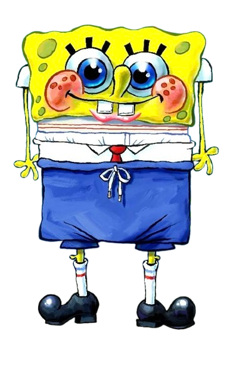
Morador
Bob Esponja Calça Quadrada
Cozinheiro mestre do Siri Cascudo, sempre otimista e pronto para caçar águas-vivas.
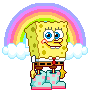
Filtre por categoria para conhecer quem vive e os lugares marcantes da cidade.

Cozinheiro mestre do Siri Cascudo, sempre otimista e pronto para caçar águas-vivas.

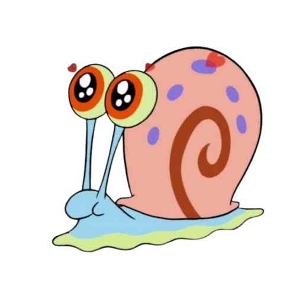
O fiel caracol de estimação do Bob Esponja. Muito mais inteligente do que parece, adora ler livros e dizer "Miau".
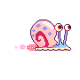
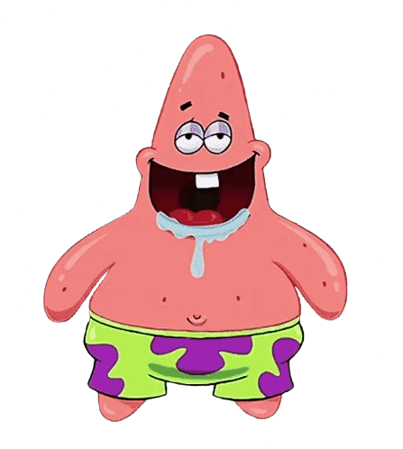
Melhor amigo do Bob Esponja. Adora dormir, comer e viver grandes aventuras sem sair do lugar.
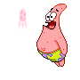
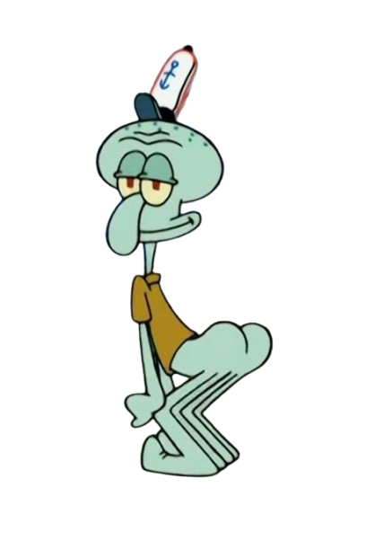
Vizinho do Bob Esponja e caixa do Siri Cascudo. Apaixonado por clarinete, artes e tranquilidade.
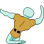
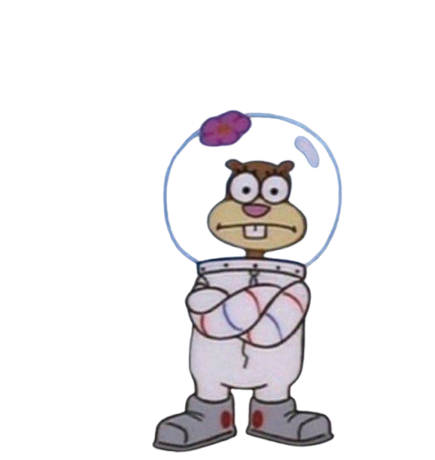
Cientista, inventora e mestre de caratê vinda diretamente do Texas para explorar o oceano.
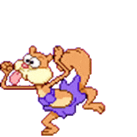
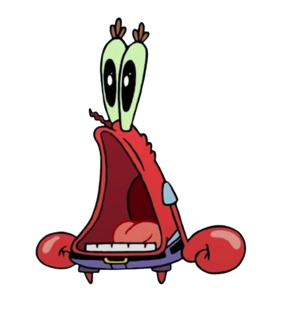
Fundador e dono do Siri Cascudo. Apaixonado por dinheiro e protetor incansável da fórmula secreta.
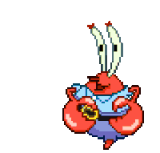
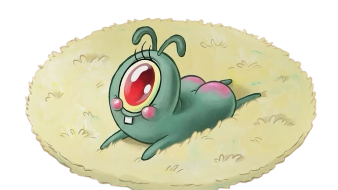
Dono do Balde de Lixo e maior rival do Seu Sirigueijo. Gênio do mal em miniatura que vive bolando planos para roubar a fórmula.
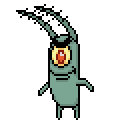
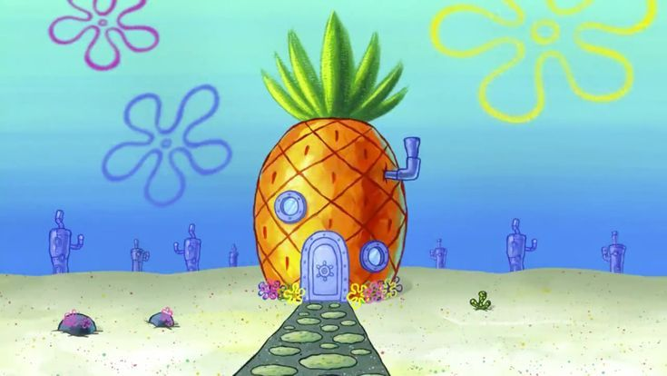
Um abacaxi gigante na Rua da Concha, 124, onde Bob Esponja mora com seu caracol de estimação, Gary.
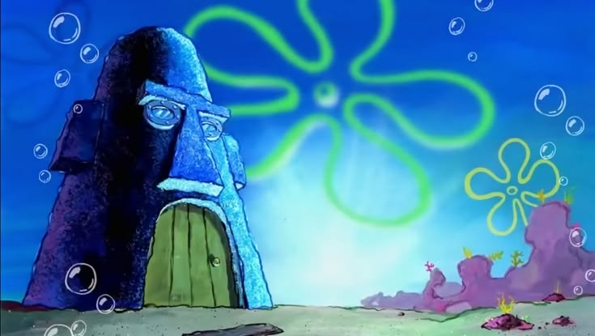
Uma estátua estilo Ilha de Páscoa localizada bem entre o abacaxi do Bob Esponja e a pedra do Patrick.
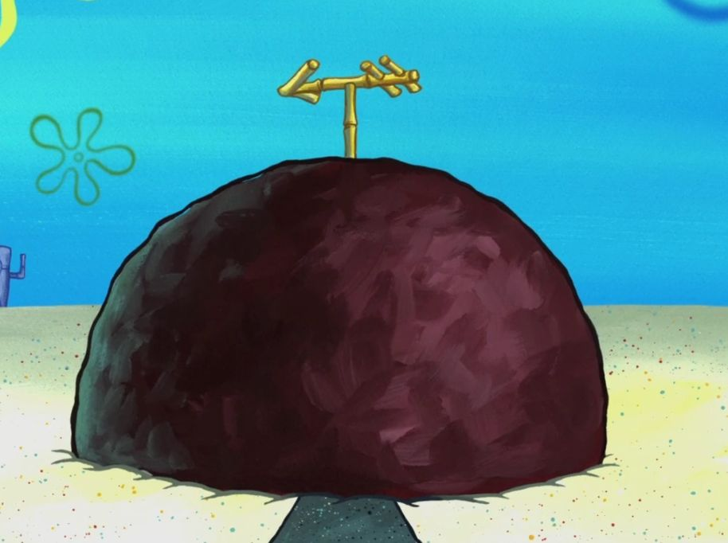
Uma grande pedra marrom na Rua da Concha, 120, com móveis esculpidos inteiramente na areia.
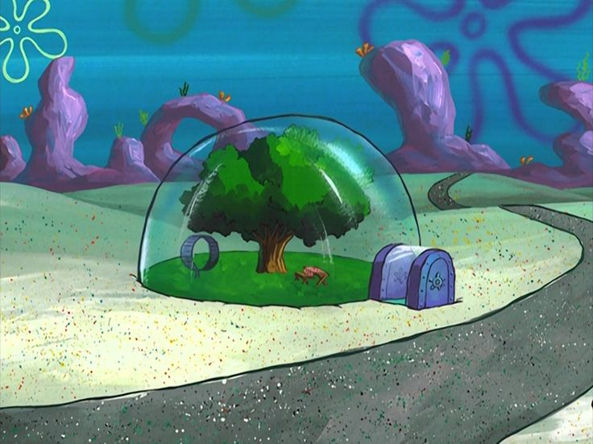
Uma cúpula de vidro cheia de ar puro, grama verde e uma grande árvore onde Sandy vive e faz experimentos.
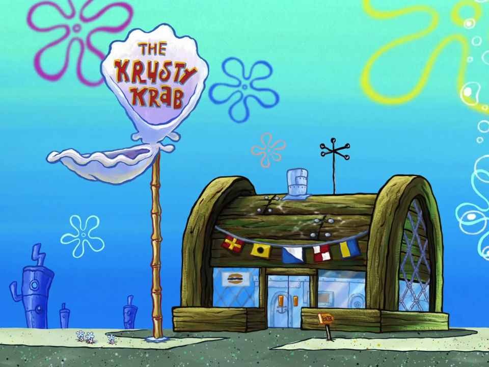
O restaurante mais famoso da Fenda do Biquíni, comandado pelo Seu Sirigueijo e lar do Hambúrguer de Siri.
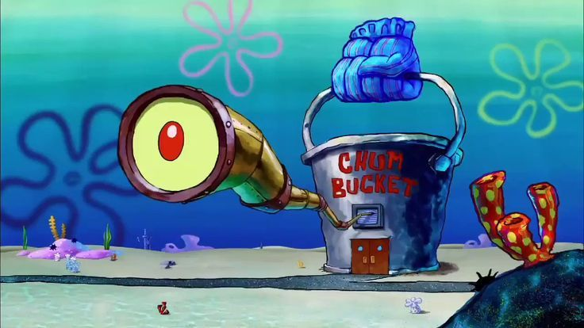
Restaurante rival localizado bem em frente ao Siri Cascudo, onde Plankton e Karen planejam roubar a fórmula secreta.
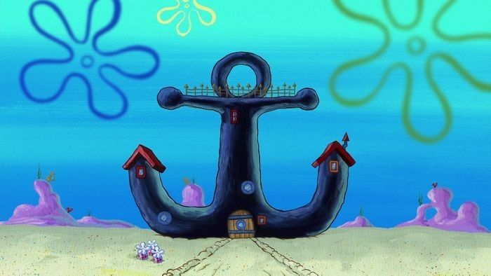
Uma grande âncora azul-escura na Rua Âncora, 3541, onde o dono do Siri Cascudo vive com sua filha, Pérola.